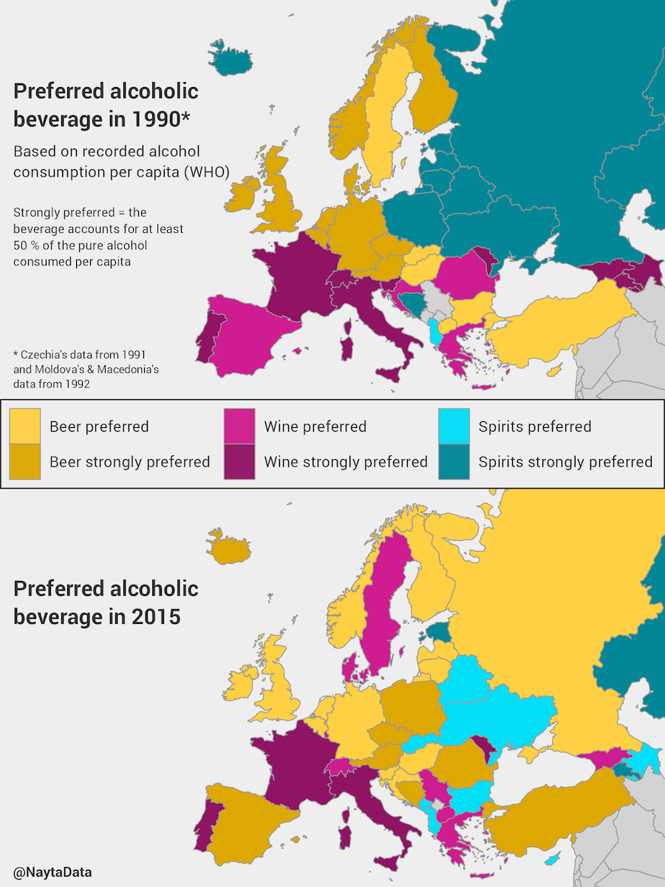
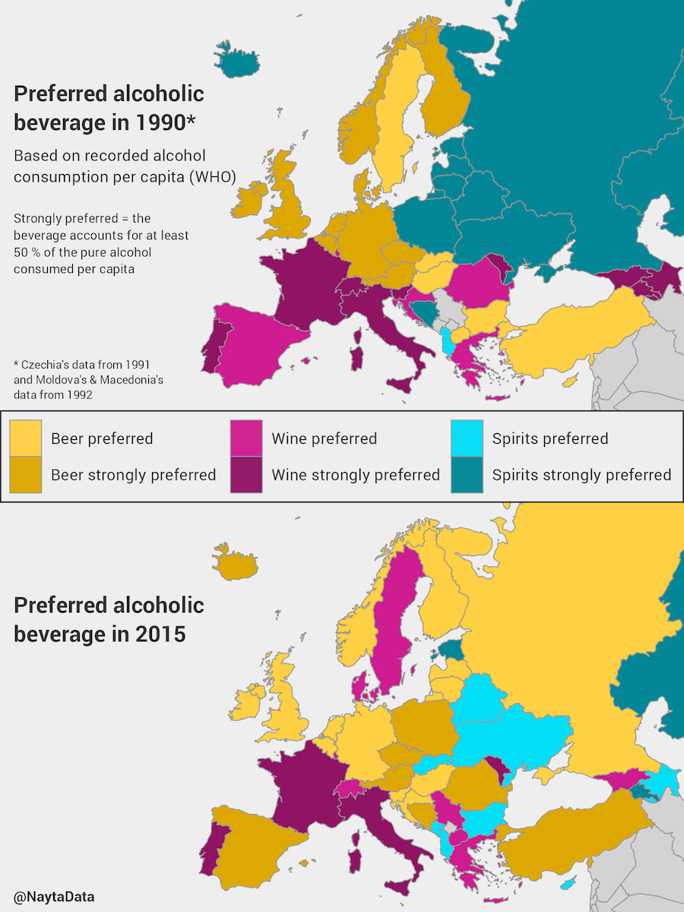

How The Favorite Alcohol In European Countries Has Changed Over Time, Mapped
Can the alcoholic preferences of a country change in the span of a few decades? Turns out it can and in the case of countries like Russia, Sweden and Iceland, it already has.
According to this map made by Reddit user NaytaData, the preferred drink of choice has changed among many countries from 1990 to 2015. In Sweden, for instance, the most consumed alcohol per capita switched from beer to wine in 2015. And perhaps contrary to popular conception, the most favored alcoholic beverage in Russia is no longer spirits (that is, vodka) — it's beer:
 

In fact, there seems to be a beer invasion going on in Europe. Along with Russia, several other countries such as Spain, Iceland, Poland and Romania are drinking beer more than any other alcoholic beverages. Interestingly, this shift towards beer in Europe also mirrors the alcoholic preferences of the US, which has always preferred beer over any other alcoholic drink.
[Via Reddit]